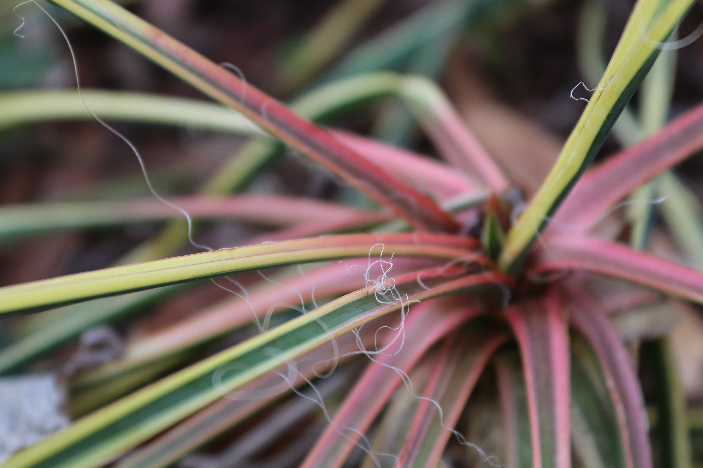

Introduction
Hi! My name is Sierra Fox. I was born in Edgewater, Maryland on the East Coast of the United States of America.
I am a freshman at Elon University,
and I am a student in the School of Communications!
I am a Communications Design major.
Professional Life
As a student, I have been involved in several leadership positions and creative roles.
I held a management position as well as overseeing the visual media for my highschool's Harvest for the Hungry campaign which raised monetary and canned donations for neighboring counties in need. Academically, I have maintained honor-roll for my entire highschool career.
I am also an AP Scholar.
